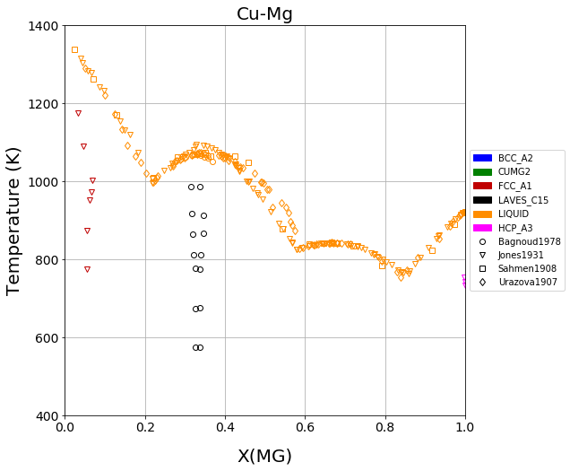
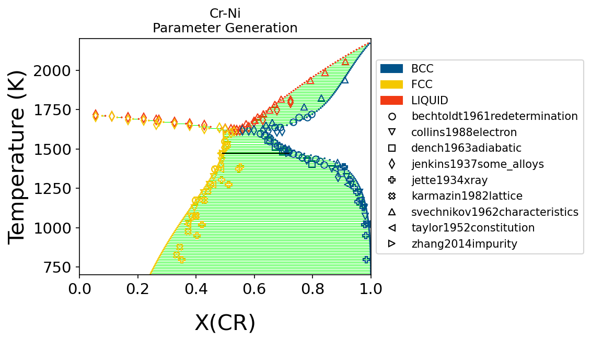
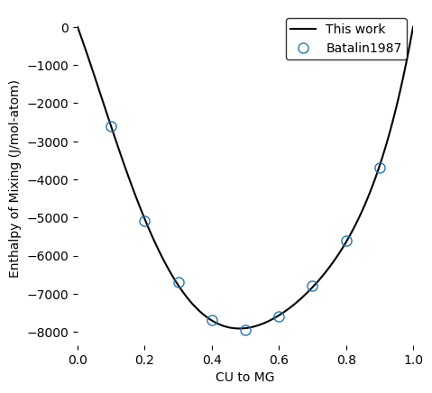
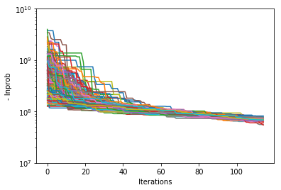
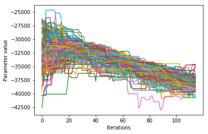
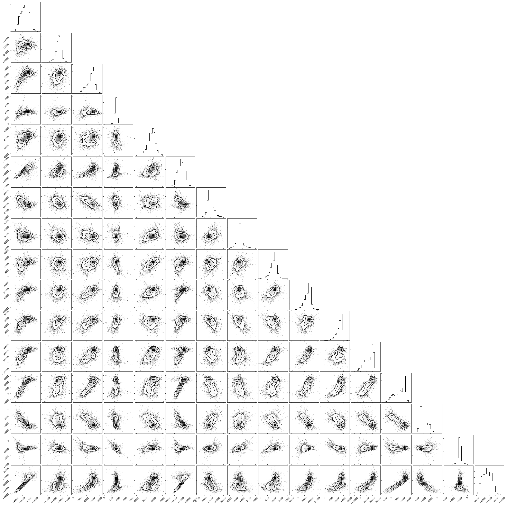
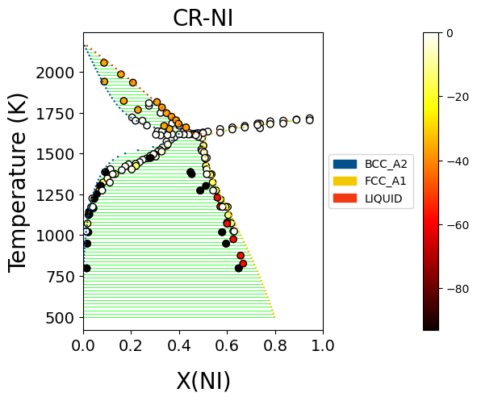

Recipes
Here you can find some useful snippets of code to make using ESPEI easier.
Get optimal parameter TDB files from a trace
Creating TDBs of optimal parameters from a tracefile and probfile:
"""
This script updates an input TDB file with the optimal parameters from an ESPEI run.
Change the capitalized variables to your desired input and output filenames.
"""
INPUT_TDB_FILENAME = 'CU-MG_param_gen.tdb'
OUTPUT_TDB_FILENAME = 'CU-MG_opt_params.tdb'
TRACE_FILENAME = 'trace.npy'
LNPROB_FILENAME = 'lnprob.npy'
import numpy as np
from pycalphad import Database
from espei.analysis import truncate_arrays
from espei.utils import database_symbols_to_fit, optimal_parameters
trace = np.load(TRACE_FILENAME)
lnprob = np.load(LNPROB_FILENAME)
trace, lnprob = truncate_arrays(trace, lnprob)
dbf = Database(INPUT_TDB_FILENAME)
opt_params = dict(zip(database_symbols_to_fit(dbf), optimal_parameters(trace, lnprob)))
dbf.symbols.update(opt_params)
dbf.to_file(OUTPUT_TDB_FILENAME)Plot phase equilibria data
When compiling ESPEI datasets of phase equilibria data, it can be useful to plot the data to check that it matches visually with what you are expecting. This script plots a binary phase diagram.
TIP: Using this in Jupyter Notebooks make it really fast to update and watch your progress.
"""
This script will create a plot in a couple seconds from a datasets directory
that you can use to check your phase equilibria data.
Change the capitalized variables to the system information and the
directory of datasets you want to plot.
"""
COMPONENTS = ['CU', 'MG', 'VA']
INDEPENDENT_COMPONENT = "MG" # component to plot on the x-axis
PHASES = ['BCC_A2', 'CUMG2', 'FCC_A1', 'LAVES_C15', 'LIQUID']
DATASETS_DIRECTORY = "~/my-datasets/CU-MG"
X_MIN, X_MAX = 0.0, 1.0
Y_MIN, Y_MAX = 400, 1400
# script starts here, you shouldn't have to edit below this line
import os
from espei.plot import dataplot
from espei.datasets import recursive_glob, load_datasets
from pycalphad import variables as v
import matplotlib.pyplot as plt
plt.figure(figsize=(10,8))
ds = load_datasets(recursive_glob(os.path.expanduser(DATASETS_DIRECTORY), '*.json'))
conds = {v.P: 101325, v.T: (1,1,1), v.X(INDEPENDENT_COMPONENT): (1, 1, 1)}
dataplot(COMPONENTS, PHASES, conds, ds)
plt.xlim(X_MIN, X_MAX)
plt.ylim(Y_MIN, Y_MAX)
plt.show()The script gives the following output:

Plot phase diagram with data
%matplotlib inline
from pycalphad import Database, binplot, variables as v
from espei.datasets import load_datasets, recursive_glob
from espei.plot import dataplot
import matplotlib.pyplot as plt
# load the experimental and DFT datasets
dataset_dir = "input-data"
dataset_dir = "/Users/brandon/Projects/2020-workshop-material/ESPEI/input-data/run"
datasets = load_datasets(recursive_glob(dataset_dir, "*.json"))
# set up the pycalphad phase diagram calculation
dbf = Database("/Users/brandon/Projects/2020-workshop-material/ESPEI/mcmc-tmp.tdb")
comps = ["CR", "NI", "VA"]
phases = ["LIQUID", "FCC", "BCC"]
conds = {v.P: 101325, v.T: (700, 2200, 10), v.X("CR"): (0, 1, 0.01)}
# plot the phase diagram and data
fig, ax = plt.sublots(dpi=150)
binplot(dbf, comps, phases, conds, plot_kwargs={"ax": ax})
dataplot(comps, phases, conds, datasets, ax=ax)
ax.set_title("Cr-Ni\nParameter Generation")
ax.set_ylim(conds[v.T][0], conds[v.T][1])
ax.set_xlabel("X(CR)")
ax.set_ylabel("Temperature (K)")
fig.show()
Plot thermochemical properties parameters with data
Parameter selection in ESPEI fits Calphad parameters to thermochemical data. MCMC can adjust these parameters. In both cases, it may be useful to compare the energies of specific interactions to the model predictions. The espei.plot.plot_interaction code will plot the predicted interaction from the database against the available data, if any.
"""
This script plots a single interaction in a database compared to data.
"""
# Settings
INPUT_TDB_FILENAME = 'CU-MG_param_gen.tdb'
DATASET_DIRECTORY = 'input-data'
PHASE_NAME = 'LIQUID'
# CONFIGURATION must be a tuple of the configuration to be plotted.
# This can only plot one endmember or interaction at a time.
# Note that the outside tuples are the whole configuration
# and the insides are for each individual sublattice.
# Single sublattices *MUST* have the comma after the
# object in order to be a tuple, not just parantheses.
# some examples:
# ('CU', 'MG') # endmember
# (('CU', 'MG'),) # (('CU', 'MG')) is invalid because it will become ('CU', 'MG')
# ('MG', ('CU', 'MG'))
CONFIGURATION = (('CU', 'MG'),)
# Plot the parameter
import matplotlib.pyplot as plt
from pycalphad import Database
from espei.datasets import load_datasets, recursive_glob
from espei.plot import plot_interaction
dbf = Database(INPUT_TDB_FILENAME)
comps = sorted(dbf.elements)
ds = load_datasets(recursive_glob(DATASET_DIRECTORY, '*.json'))
plot_interaction(dbf, comps, PHASE_NAME, CONFIGURATION, 'HM_MIX', datasets=ds)
plt.show()Running for the single sublattice LIQUID phase in Cu-Mg gives the following output after parameter selection:

Visualize probability convergence
Convergence can be qualitatively estimated by looking at how the log-probability changes for all of the chains as a function of iterations.
# remove next line if not using iPython or Juypter Notebooks
%matplotlib inline
import matplotlib.pyplot as plt
import numpy as np
from espei.analysis import truncate_arrays
trace = np.load('trace.npy')
lnprob = np.load('lnprob.npy')
trace, lnprob = truncate_arrays(trace, lnprob)
ax = plt.subplot()
ax.set_yscale('log')
ax.set_xlabel('Iterations')
ax.set_ylabel('- lnprob')
ax.plot(-lnprob.T)
plt.show()
Visualize the trace of each parameter
Looking at how each parameter chain evolves across the chains can show if any particular chains are diverging from the rest, if there are multiple modes being explored, or how wide the distribution of parameters are relative to each other.
# remove next line if not using iPython or Juypter Notebooks
%matplotlib inline
import matplotlib.pyplot as plt
import numpy as np
from espei.analysis import truncate_arrays
trace = np.load('trace.npy')
lnprob = np.load('lnprob.npy')
trace, lnprob = truncate_arrays(trace, lnprob)
num_chains = trace.shape[0]
num_parameters = trace.shape[2]
for parameter in range(num_parameters):
fig, ax = plt.subplots() # new figure for every parameter
ax.set_xlabel('Iterations')
ax.set_ylabel('Parameter value')
ax.plot(trace[..., parameter].T)
plt.show()The example below is for one parameter. Running the snippet above will plot all of the parameters on separate plots.

Plot a corner plot
Note: You must install the corner package before using it (conda install corner or pip install corner).
In a corner plot, the distributions for each parameter are plotted along the diagonal and covariances between them under the diagonal. A more circular covariance means that parameters are not correlated to each other, while elongated shapes indicate that the two parameters are correlated. Strongly correlated parameters are expected for some parameters in Calphad models within phases or for phases in equilibrium, because increasing one parameter while decreasing another would give a similar likelihood.
# remove next line if not using iPython or Juypter Notebooks
%matplotlib inline
import matplotlib.pyplot as plt
import numpy as np
import corner
from espei.analysis import truncate_arrays
trace = np.load('trace.npy')
lnprob = np.load('lnprob.npy')
trace, lnprob = truncate_arrays(trace, lnprob)
# flatten the along the first dimension containing all the chains in parallel
fig = corner.corner(trace.reshape(-1, trace.shape[-1]))
plt.show()
Plot ZPF driving forces
This visualization can be used as a diagnostic for understanding which ZPF data are contributing the most driving force towards the likelihood. Note that these driving forces are unweighted, since the weight is applied when computing the log-likelihood of each driving force.
import numpy as np
import matplotlib.pyplot as plt
from pycalphad import Database, binplot, variables as v
from pycalphad.core.utils import extract_parameters
from espei.datasets import load_datasets, recursive_glob
from espei.error_functions.zpf_error import get_zpf_data, calculate_zpf_driving_forces
# User input variables
TDB_PATH = 'mcmc.tdb'
DATASETS_DIR = '../input-data'
COMPS = ['CR', 'NI', 'VA']
INDEP_COMP = v.X('NI') # binary assumed
CONDS = {v.N: 1, v.P: 101325, v.T: (500, 2200, 20), INDEP_COMP: (0, 1, 0.01)}
CMAP = 'hot'
outfile = 'driving-forces.png'
parameters = {} # e.g. {'VV0001': 10000.0}
approximate_equilibrium = False
# Script below:*
dbf = Database(TDB_PATH)
phases = list(dbf.phases.keys())
# Get the datasets, construct ZPF data and compute driving forces
# Driving forces and weights are ragged 2D arrays of shape (len(zpf_data), len(vertices in each zpf_data))
ds = load_datasets(recursive_glob(DATASETS_DIR, '*.json'))
zpf_data = get_zpf_data(dbf, COMPS, phases, ds, parameters=parameters)
param_vec = extract_parameters(parameters)[1]
driving_forces, weights = calculate_zpf_driving_forces(zpf_data, param_vec, approximate_equilibrium=approximate_equilibrium)
# Construct the plotting compositions, temperatures and driving forces
# Each should have len() == (number of vertices)
# Driving forces already have the vertices unrolled so we can concatenate directly
Xs = []
Ts = []
dfs = []
for data, data_driving_forces in zip(zpf_data, driving_forces):
for phase_region in data['phase_regions']:
for vertex, df in zip(phase_region.vertices, data_driving_forces):
comp_cond = vertex.comp_conds
if vertex.has_missing_comp_cond:
# No composition to plot
continue
dfs.append(df)
Ts.append(phase_region.potential_conds[v.T])
# Binary assumptions here
assert len(comp_cond) == 1
if INDEP_COMP in comp_cond:
Xs.append(comp_cond[INDEP_COMP])
else:
# Switch the dependent and independent component
Xs.append(1.0 - tuple(comp_cond.values())[0])
# Plot the phase diagram with driving forces
fig, ax = plt.subplots(dpi=100)
binplot(dbf, COMPS, phases, CONDS, plot_kwargs={'ax': ax}, eq_kwargs={'parameters': parameters})
sm = plt.cm.ScalarMappable(cmap=CMAP)
sm.set_array(dfs)
ax.scatter(Xs, Ts, c=dfs, cmap=CMAP, edgecolors='k')
fig.colorbar(sm, ax=ax, pad=0.25)
if outfile is not None:
fig.savefig(outfile)
else:
fig.show()